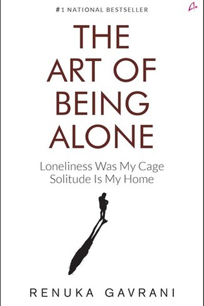

Library › Self-Improvement
The Art of Being Alone — Summary & Key Lessons

Learning to love your own company — the skill nobody teaches.
📖 OPEN THE FULL INTERACTIVE BREAKDOWN →🌐 Read it in Hindi, Hinglish, Gujarati, Tamil & 22 more languages — free, with audio.
💡 The Big Idea
Most people fear solitude because they've never learned to be good company for themselves. Gavrani's book is a gentle curriculum in self-companionship: understand why you fear being alone, build a daily practice of self-care, set boundaries that protect your space, and learn that solitude is not loneliness — it's the room where your own voice gets loud enough to hear. The goal isn't to isolate; it's to be so comfortable with yourself that every other relationship becomes a choice, not a need.
🧠 The 6 Key Lessons
Lesson 1: Solitude Is Not Loneliness
The Distinction
Gavrani's core distinction: loneliness is the ache of disconnection; solitude is the choice of presence with yourself. One depletes, the other restores. The first skill is naming which one you're actually feeling — because the fixes are opposite: loneliness needs connection, solitude needs protection.
📖 Example: The person who dreads a free Sunday is confusing solitude with loneliness — and filling every Sunday with noise they don't want. The practical edge: 'solitude is not loneliness' is not a one-time decision — it's a habit that compounds with every repetition,… Read the full example →
⚡ Do this: Track your alone time for a week: which moments felt like loneliness (drain) and which like solitude (restore)? Adjust accordingly.
Lesson 2: Fear of Being Alone Is Usually Fear of Your Own Thoughts
The Inner Noise
Gavrani's observation: what people fear in solitude is not the absence of others but the arrival of their own unexamined thoughts. The fix isn't more distraction — it's gradual, kind exposure: short moments of stillness, journaling, walking without earphones. The thoughts you avoid are the ones running your life from the background.
📖 Example: People who can't sit in silence for ten minutes are often avoiding a question they already know the answer to. Here's the part that usually gets missed: 'fear of being alone is usually fear of your own thoughts' works quietly. You won't see it working in a… Read the full example →
⚡ Do this: Start with 5 minutes of daily silence — no phone, no music. Journal whatever surfaces. Increase by a minute weekly.
Lesson 3: Self-Care Is a Discipline, Not a Luxury
The Practice
The book's middle section is a practical kit: sleep, movement, food, boundaries, and a 'date with yourself' every week. Gavrani's framing: self-care is not pampering — it's maintenance. You don't skip maintenance on a car you depend on; your body and mind are the same.
📖 Example: The weekly 'self-date' — a movie alone, a long walk, a café with a book — is a scheduled appointment with yourself, as non-negotiable as a meeting with your boss. The real test of this lesson is a bad day: the principle that survives a crisis, a tight… Read the full example →
⚡ Do this: Book a two-hour self-date this week. Treat it as a real appointment: show up, phone away, no guilt.
Lesson 4: Boundaries Are How You Protect Your Space
The Walls
Gavrani's blunt truth: people who can't be alone often can't say no — they fill every gap with others' demands. Boundaries aren't walls against the world; they're the doors you choose to open. Every healthy 'no' is a 'yes' to your own time, energy and peace.
📖 Example: Saying 'no' to the fourth social invitation this month is not rudeness — it's protecting the solitude that keeps you sane. In practice, 'boundaries are how you protect your space' shows up in tiny daily choices long before it shows up in outcomes — the… Read the full example →
⚡ Do this: Practice one small 'no' this week: decline an invitation, delay a response, protect a block of your time.
Lesson 5: Your Relationship With Yourself Sets the Template
The Mirror
Gavrani's deepest point: the way you treat yourself — your inner critic, your broken promises, your neglect — becomes the pattern for how you let others treat you. Self-respect is the boundary that teaches people your standards. Heal the self-relationship and every other relationship reorganizes.
📖 Example: Someone who constantly cancels on themselves (skips meals, breaks workouts) will tolerate others canceling on them too. Most people nod at this principle and change nothing. The gap between agreeing and acting is where the whole game is won or lost. Read the full example →
⚡ Do this: Notice your inner voice for one day. Catch three self-critical or self-dismissive moments and rewrite them as a friend would.
Lesson 6: Being Alone Is Where Your Voice Gets Loud
The Discovery
The book's climax: in solitude, you stop performing and start discovering — what you actually like, believe and want. Decisions made in silence are usually the honest ones. Gavrani's promise: the person who masters solitude never feels abandoned, because their most important relationship can never leave.
📖 Example: The classic clarity experience: a solo trek, a silent retreat, a quiet week — after which people report knowing what they actually want. The uncomfortable truth about this lesson: it requires doing the boring version first — the unglamorous reps that nobody… Read the full example →
⚡ Do this: Make one decision this week in silence: no advice-seeking, no group chat. Decide alone, then test the decision.
✅ 5-Step Action Plan
- Distinguish solitude from loneliness in your own week.
- Start 5 minutes of daily silence, journaling what surfaces.
- Book a two-hour self-date — non-negotiable.
- Practice one small 'no' to protect your space.
- Make one decision alone, without external validation.
⚠️ When This Doesn't Work
Gavrani's celebration of solitude has a dangerous edge: solitude can curdle into isolation, and the line is thinner than the book admits. Howard Hughes is the extreme — a man who took solitude so far that he stopped seeing anyone, stopped being tested by anyone, and slowly lost his grip on reality. The caveat: the art of being alone must include the art of returning. Solitude is a retreat, not a residence. If being alone starts feeling safer than being with people, that's not mastery — that's the first symptom.
💀 The Graveyard Proves It
🛩️ Howard Hughes — The Billionaire in a Darkened Room. Burn: Everything money can't buy. Read the full case study →
💬 Best Quotes from The Art of Being Alone
- “Being alone is not a punishment. It is practice for being yourself.”
- “You cannot pour from an empty cup — fill yourself first.”
- “The relationship you have with yourself sets the tone for every other relationship.”
Interactive version: mark lessons as read, listen in your language, share quote cards.